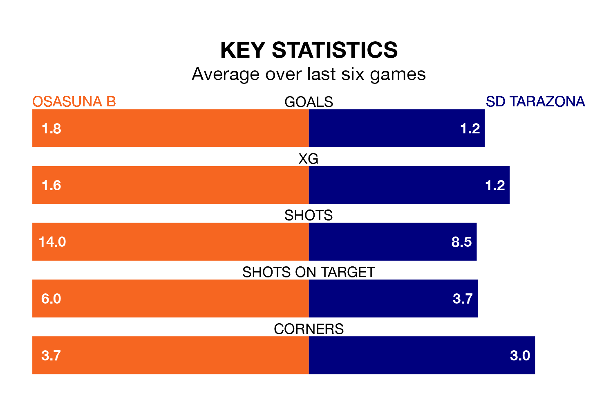

Osasuna B host SD Tarazona on Sunday at Instalaciones Deportivas de Tajonar in Primera Division RFEF Group 1.
In their last league match, on January 14, Osasuna B drew with Real Sociedad B 2-2 away, with goals from Guillem Molina Gutiérrez and Jorge Aguirre de Céspedes.
Tarazona won, 1-0 at home against CD Lugo on January 13, with Borja San Emeterio Díaz scoring their goals.
With 27 goals in 19 games so far this season, Osasuna B are the league's third-highest scorers with 1.4 goals per game. But they are conceding more than average too, letting in 25 goals at a rate of 1.3 per game.
Tarazona, meanwhile, are below average scorers, with 0.8 goals per game, compared to a league average of 1.0. They have conceded 0.9 goals per game.
The visitors are 14th in the table after 19 games, of which they have won five and drawn six, earning 21 points.
The home side are four places ahead of Tarazona in 10th, with seven wins and five draws putting them on 26 points.
Osasuna B are in mixed form in Primera Division RFEF Group 1, with two wins and three draws from their last six games.
With four wins and two losses over that period, Tarazona's form is better – they have taken 12 points from 18, compared to Osasuna B's nine.
Updated: 10:02 (UTC), 19/01/24